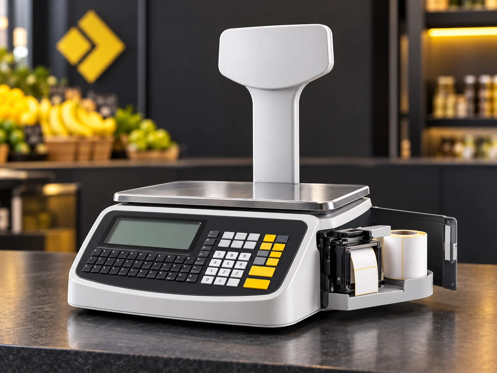
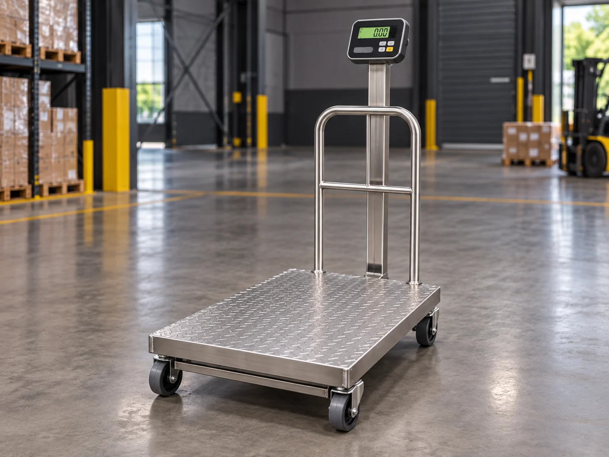
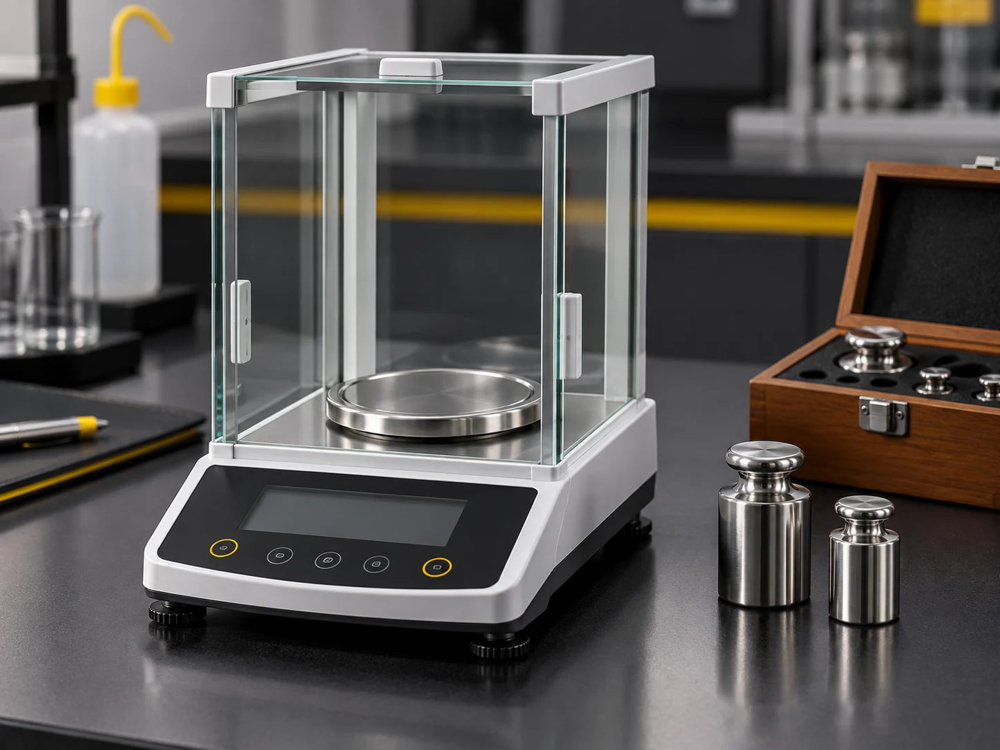
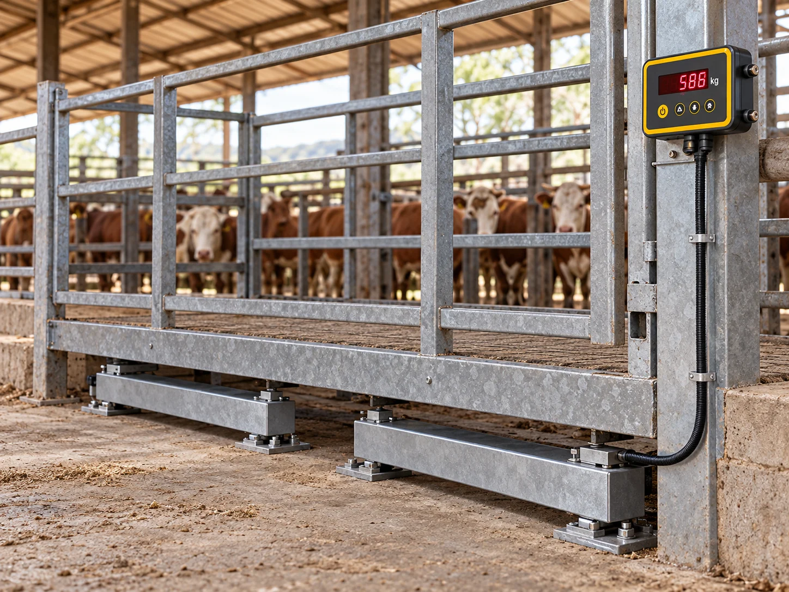

Um equipamento para cada operação
Vendemos e damos suporte a balanças de diversas marcas, dimensionadas para o seu tipo de pesagem.

Comercial
Balcão e checkout para mercados, açougues e lojas.

Industrial
Plataformas robustas para linha de produção e estoque.
Rodoviária
Pesagem de caminhões com precisão e alta capacidade.

Analítica
Alta precisão para laboratório e controle de qualidade.

Balança de barras
Barra e indicador próprios para gado, com controle total no app.
Barra própria, indicador próprio e controle de pesagem pelo app.
A Lumak desenvolve a solução completa para balança de gado: barras robustas, indicador dedicado e acompanhamento da pesagem pelo aplicativo. Também criamos apps, programas e sistemas de pesagem sob medida para indústria, comércio, agro e operações que precisam automatizar processos.
Quem confia na Lumak
Agropecuária
Barra e indicador próprios com controle no app.
Avicultura
Ajuste de classificadoras de ovos com laudo.
Laticínios & indústria
Pesagem de precisão em linha de produção.
Comércio
Balanças de balcão para mercados e açougues.